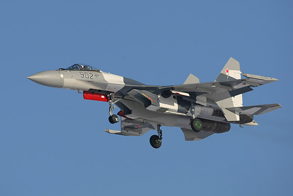

Еще одним новейшим самолетом, недавно принятым на вооружение ВВС России, является Су-35. В 2014 году в авиаполки ВКС прибыли 12 подобных самолетов, всего же до конца 2020 года в ВВС поступит 48 Су-35. Этот самолет, разработанный в ОКБ имени Сухого, относится к поколению 4++ и обладает техническими и боевыми характеристиками почти на уровне самолета пятого поколения.
От ПАК-ФА он отличается только отсутствием стелс-технологий и активной фазированной антенной решетки (АФАР). Самолет оснащен новой информационно-управляющей системой, РЛС с фазированной решеткой, новыми двигателями с управляемым вектором тяги, которые могут развивать сверхзвуковую скорость без использования форсажа. Усилен также планер самолета.
С принятием на вооружение этого самолета российские военные летчики могут дать отпор новейшим самолетам последнего поколения
